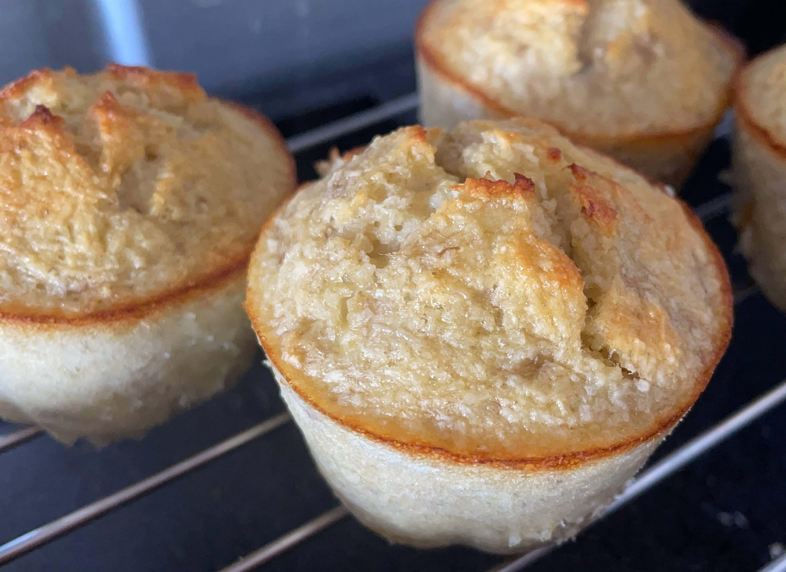

Bolinho fit de coco

Ingredientes
- 1 banana madura amassada
- 2 ovos
- 1/2 xícara de coco ralado
Modo de preparo
- Misturar bem todos os ingredientes;
- Despejar em forminhas de cupcake untadas (ou uma fôrma maior, para fazer um bolo só) e levar para assar a 180°C por 15 a 20 minutos.